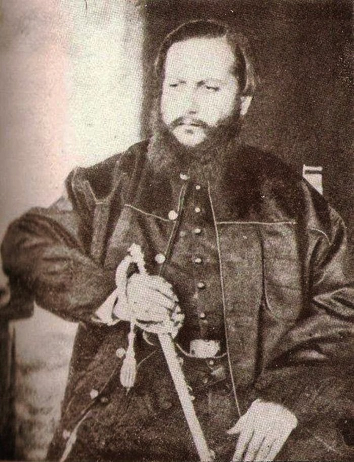
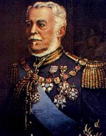
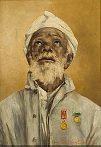

Causas

Agora chega de falar de conflitos estrangeiros... Vamos falar sobre o que
realmente importa: conflitos brasileiros, e a guerra do Paraguai é um
deles!
Esta aconteceu, principalmente, porque o ditador do Paraguai da época, o
infame Solano López, resolveu dar uma de Napoleão e invadiu o nosso Mato
Grosso. Além disso, era de interesse do Brasil manter controle dos rios
no Paraguai, e o Uruguai.
Na época, o Paraguai estava divido em duas facções políticas, os blancos
e os colorados, e estes eram apoiados por Brasil e Argentina, que queriam
assegurar seus interesses, e Solano, como é de se imaginar, apoiava os
Blancos. Uma guerra civil aconteceu no Paraguai, e os colorados venceram.
Contudo, Solano invadiu o território Argentino para atacar os brasileiros,
e assim começava a guerra.
Desenrolar
Em novembro de 1864, Solano sequestra o navio Marquês de Olinda e ataca a
cidade de dourados no Mato Grosso. Em 1865, os paraguaios invadem e tomam
o Rio Grande do Sul, também através da Argentina, mas este seria reconquistado
na batalha de Riachuelo. Com isto, o governo brasileiro decide se juntar á
Argentina e Uruguai, formando assim a Tríplice Aliança, cujas tropas seriam
comandadas por Bartolomeu Mitre, o presidente Argentino da época. Nas batalhas mais
marcantes que se seguiram, a grande maioria das vitórias foi dos aliados,
como na reconquista do forte de Humaitá, ou na batalha de Tuiuti, em 1866,
que aconteceu no pântano, mas vale também citar a Retirada da Laguna, conflito onde
as tropas paraguaias marcaram vitória. O general brasileiro mais importante
nessas batalhas foi o Marquês de Caxias, futuro Duque, que foi futuramente chamado
pelo governo imperial para traçar uma estratégia para alcançar a vitória.

Desfecho
Em 1869, Caxias conquista Assunção e deixa o comando da guerra para o genro de
D. Pedro II, príncipe Luís Gastão, que tinha ordens expressas para que
Solano López fosse capturado, vivo ou morto. A guerra acabou em 1870, quando
Solano foi morto em Cerro Corá, por se recusar a se render.
Após tudo isso, o Paraguai ficou completamente destruído: mais de 80% de sua
população masculina havia sido dizimada, sobrando apenas idosos, crianças e
homens mutilados de guerra. Além disso, as poucas indústrias do país foram
destruídas, e também foi o cultivo, fazendo com que a população sobrevivente
passasse a viver de subsistência e lavoura. O país também perdeu parte de seu
território para o Brasil e Argentina, e se endividou com os países da Tríplice.
Esta dívida foi perdoada pelo Uruguai em 1885, a Argetina em 1942, e o Brasil
em 1943.
O Brasil contraiu dívidas, e teve sua economia desestabilizada por
conta da guerra, além das milhares de baixas. Apesar disso, agora tinha controle
da bacia de prata e um exército modernizado.
A Inglaterra não participou diretamente da guerra, mas encontrou lucro nela,
ao emprestar dinheiro para a reconstrução do Paraguai e para o Brasil, o que
também aumentou as dívidas destes dois países.

 Documentário que expõe fatos sobre os principais conflitos armados do Brasil, não só a Guerra do Paraguai.
Documentário que expõe fatos sobre os principais conflitos armados do Brasil, não só a Guerra do Paraguai.